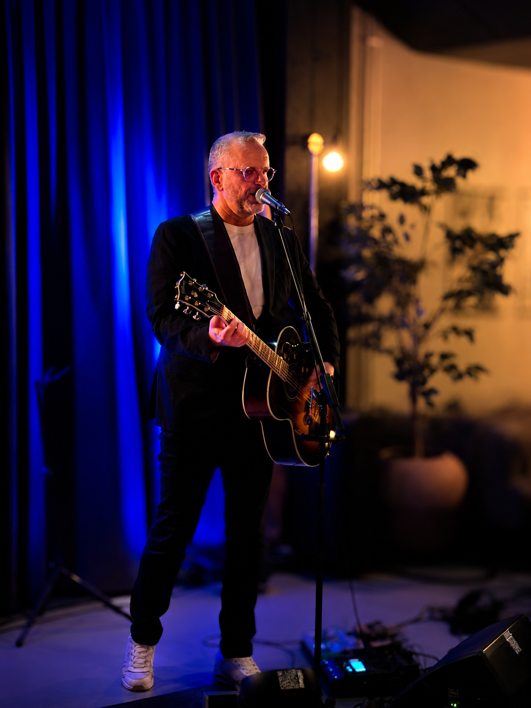
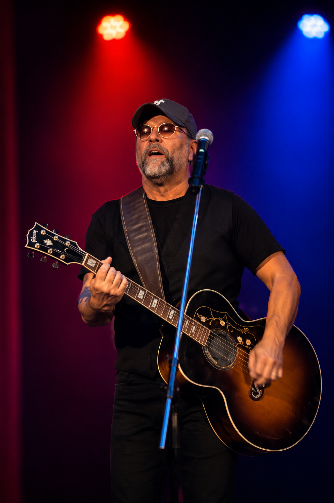
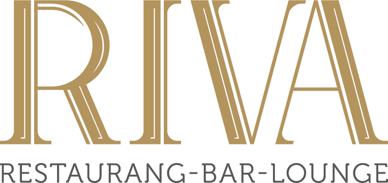
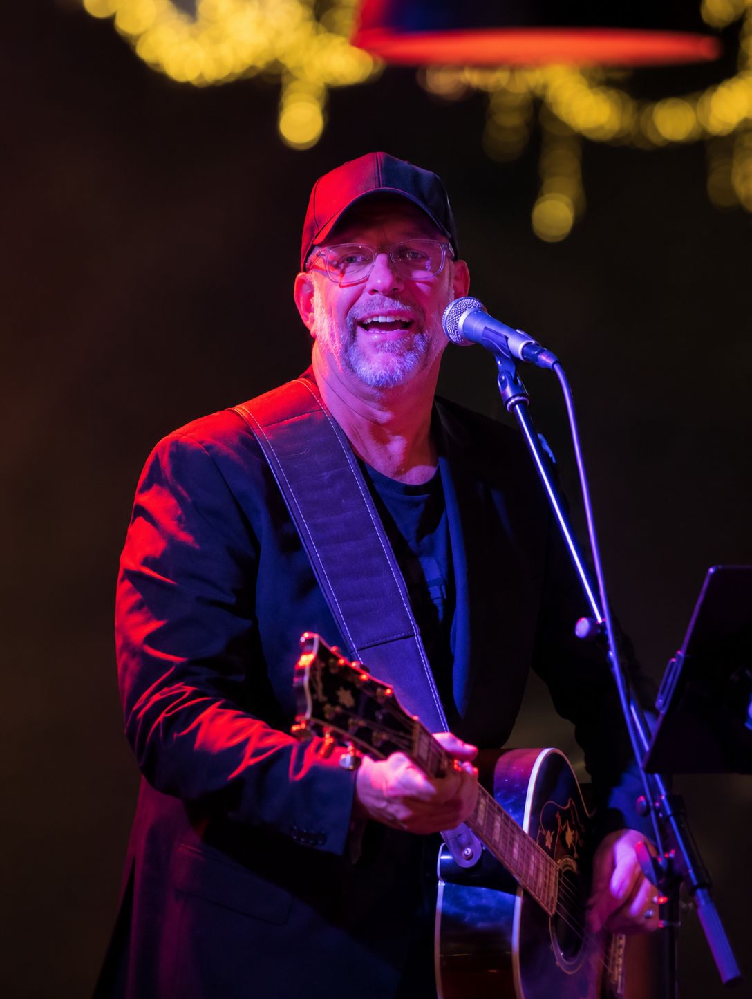

Fest & födelsedag
Livemusik som går från mingel till allsång och dans när kvällen tar fart.

Trubadur • Musikquiz • Underhållning
Från skön musik till fullt ös och allsång. För pub, afterski, after beach, fest och företagsevent.
Utgår från Västerås • Spelar i Mälardalen, Stockholm, på Gotland och i skidorter
Vad behöver ni?
Ingen spelning är den andra lik. Jag läser av publiken och blandar välkända låtar, svenska favoriter, rock, pop, allsång och önskemål efter stämningen i rummet.
Boka Henke
Livemusik som går från mingel till allsång och dans när kvällen tar fart.
Hög energi, välkända låtar och publikkontakt. Erfarenhet från svenska skidorter, Alperna och after beach på Gotland.
After work, jubileum, konferens eller personalfest med musik anpassad efter sällskapet.
Bred repertoar, önskelåtar och nära kontakt med publiken.
Musik, frågor och liveframträdanden i ett quiz som får hela sällskapet engagerat.
När ni vill växla upp från trubadur till fullt band och ännu mer tryck på dansgolvet.
Se mig live
Inga två kvällar är likadana. Låtval, tempo och upplägg anpassas efter publiken och stämningen i rummet. Här lägger vi snart in ett kort showreel-klipp.

Enkelt att boka
Välkända låtar som människor känner igen och vill sjunga med till.
Jag anpassar låtval, tempo och upplägg efter människorna framför mig.
Många år på scen i allt från pubar och privata fester till afterski, after beach och större arrangemang.
Jag kan ta med ljud och den teknik som behövs för spelningen.
Referenser
Restauranger, hotell och eventanläggningar som jag har haft förmånen att samarbeta med under flera år.
”Vi har haft ett långt och mycket gott samarbete med Henke. Han är en fantastisk sångare och entertainer som levererar varje gång. Vi har samarbetat i över elva år och hoppas ha honom hos oss länge till.”

”Henke är alltid ett säkert kort i samband med våra event, både som mingeltrubadur, konferencier och underhållare till middag. Musikquiz är också ett mycket uppskattat inslag på våra konferenser.”

”De kvällar vi har Henke hos oss blir det alltid något alldeles extra. Kvällen övergår i allsång, skratt, fest och dans ända till stängningsdags.”

”Henkes spelningar hos oss på Fårö har varit episka. Varje år ser vi fram emot att han ska komma tillbaka till oss, något som blivit en tradition sedan fyra år tillbaka.”
Om Henke
Jag har hållit på med musik nästan hela livet. Som 12-åring startade jag mitt första band, först bakom trummorna men ganska snart med gitarren och sången i centrum. 1987 började jag spela som trubadur och sedan dess har det blivit tusentals timmar på scen.
På 90-talet startade jag partybandet Ramalama Tubsox tillsammans med en trubadurkollega. Det blev många år av spelningar och turnéer i Sverige, Norge och Alperna, inte minst på afterski där samspelet med publiken blev en viktig del av mitt sätt att uppträda.
I dag spelar jag både solo som Trubadur Henke och med partycoverbandet HenkoBenko. Genom åren har jag stått på scen i allt från små pubar och privata fester till företagsevent, afterski, after beach och större arrangemang.
Med HenkoBenko har jag också fått spela tillsammans med artister som David Lindgren, Méndez, Andreas Lundstedt, Nordman och Nanne Grönvall.
Oavsett om jag spelar för 30 personer på en middag eller framför ett fullt dansgolv är grundidén densamma: att läsa av rummet och få publiken delaktig. Ibland betyder det skön musik i bakgrunden. Ibland slutar det med allsång och dans. Det är just den variationen som gör att jag fortfarande tycker att det är lika roligt att kliva upp på scen.

”Målet är enkelt: människor ska gå hem och känna att det blev en riktigt bra kväll.”
Bokningsförfrågan
Berätta lite om spelningen så återkommer jag så snart jag kan med förslag på upplägg.